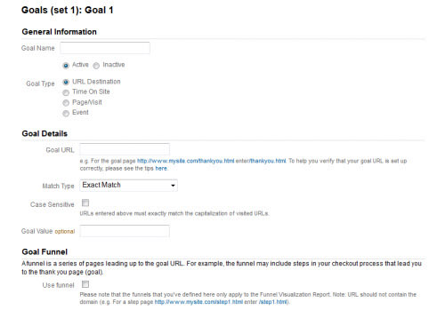

Analytics: Goals for the Journal
This post catalogs my continuing exploration and experimentation with analytics, using AARosemond’s Science Journal. Now that I've set up Google analytics, I'm able to gather a few insights from the user visits. This post will focus on setting up analytics towards achieving goals.
Goals and Events
 The First Step in Setting Goals.AARosemond’s Science Journal is a site designed to explore and experiment with web development. I'm using the journal to record my reaction to design, accessibility, analytics and related subjects, as well as display my hopefully increasing skill at generating and disseminating compelling content. So it is naturally a test platform for learning and trying out the power of analytics. I figured I could start this process by looking at how much time users are viewing each page and setting up goals to help increase it.
 First look at analytics for the journal.
First look at analytics for the journal.
- A quick look at the analytics report signalled that users were spending an average of 42 seconds on each page. I'm not sure if that's how long it takes to read a blog post or perhaps that's the average attention span for my content.
- Just to try things out, I set my first goal to record instances of page views over 40 seconds.
- It doesn't look like I had to set up a funnel for the event, but my goal is labeled "Engaged User". My hope is to analyze what content is keeping users viewing over 40 seconds and maybe optimize for that content, before making a goal to increase average time on the site.
This puts us in a wait and see pattern until next post.